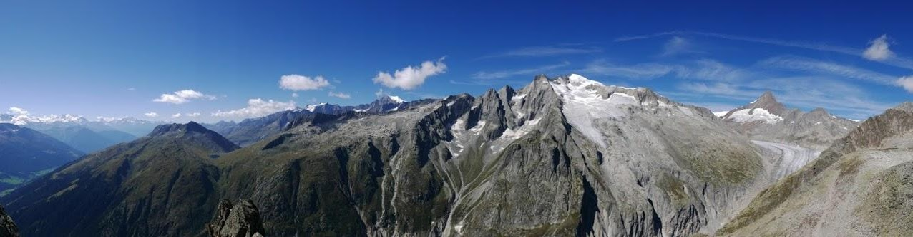

Wer bin ich?
Mein Name ist Jan Schär und ich befinde mich aktuell in der Lehre als Informatiker. Neben meiner Ausbildung habe ich eine grosse Leidenschaft für Sport, die einen wichtigen Teil meines Lebens ausmacht. Ich halte mich gerne aktiv und gehe regelmässig ins Fitnessstudio, um fit zu bleiben. Auch Fussball spiele ich ab und zu, was mir die Möglichkeit gibt, Teamarbeit zu erleben und meine Fähigkeiten auf dem Spielfeld zu verbessern. Zudem wandere ich gerne, was mir hilft, die Natur zu geniessen und gleichzeitig meine Ausdauer zu stärken. In meiner beruflichen Laufbahn als Informatiker in der Lehre lerne ich ständig neue Dinge und wachse in der Welt der Technologie, was mich für die Zukunft sehr begeistert. Ich bin stets bestrebt, mein Wissen zu erweitern und meine Fähigkeiten zu verbessern, besonders in der sich ständig weiterentwickelnden IT-Branche. Sport spielt eine wesentliche Rolle, um einen ausgewogenen Lebensstil zu führen und sowohl körperliche als auch mentale Stärke zu entwickeln. Ob im Fitnessstudio, auf dem Fussballplatz oder beim Wandern, ich finde, dass Bewegung nicht nur die Gesundheit fördert, sondern mir auch wertvolle Lektionen in Disziplin, Teamarbeit und Ausdauer vermittelt.
